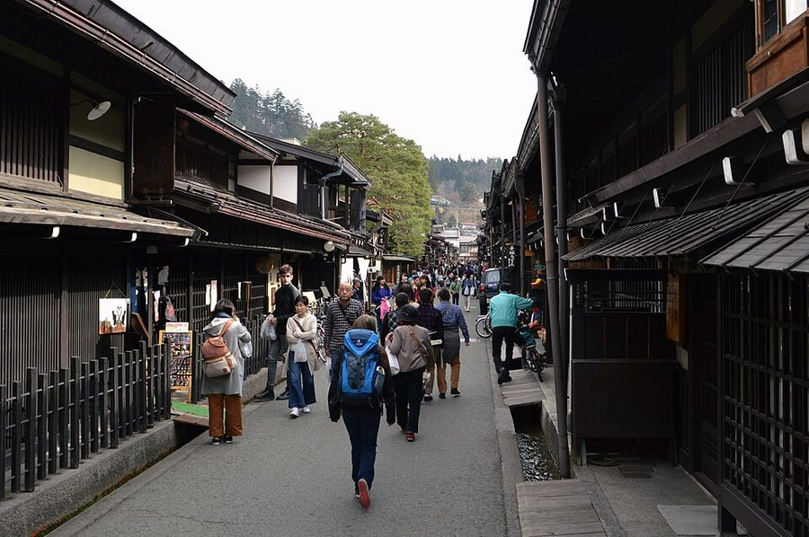
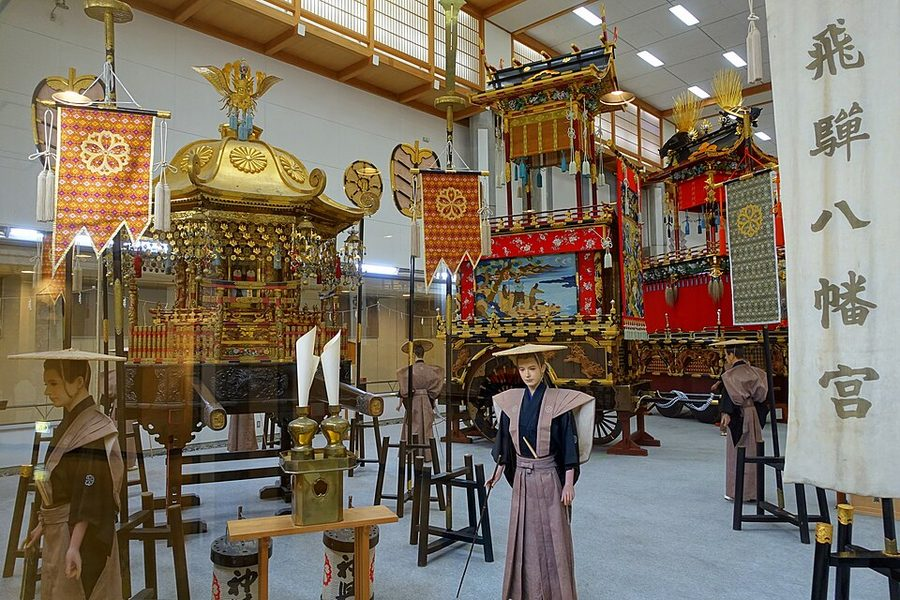
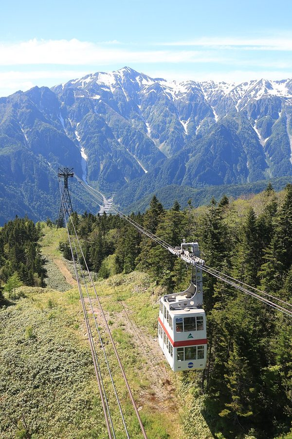
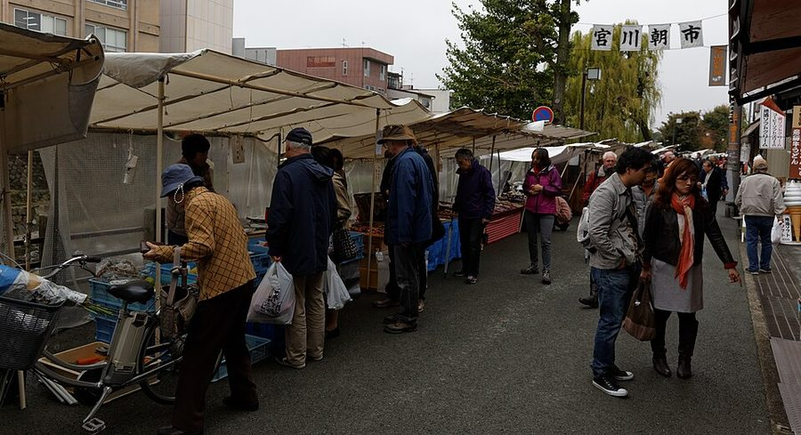

岐阜県高山市はどんなまち？
数字で見る🔍岐阜県高山市
全国26,033件の寄り道スポットデータから見た高山市の姿を、全国1,837市区町村との比較で読み解きます。
高山市は日本一面積が広い市（東京都とほぼ同じ2,177km²）。市域の92%が森林で、 古い町並みから3,000m級の北アルプスまでを1つの市に抱えます。
78,262人
人口（2025年）
2,177.61km²
面積・全国の市で1位
92.1%
森林率
11.4℃
年平均気温（平年値）
まちの横顔




- 地形と気候: 市街地は標高約570mの高原盆地。年平均気温11.4℃、1月の平均は氷点下（-1.2℃）、 8月でも24.4℃と夏は涼しく、冬は雪に覆われる内陸山岳気候です。
- 観光: 城下町の面影を残す古い町並（さんまち通り）、ユネスコ無形文化遺産の高山祭、 日本三大朝市の宮川朝市。市域東部には平湯・新穂高などの奥飛騨温泉郷を抱えます。
- 特産と文化: 飛騨牛、高山ラーメン、さるぼぼ、飛騨春慶（漆器）。古くから「飛騨の匠」と 呼ばれる木工職人を輩出してきた、ものづくりのまちでもあります。
寄り道充実度（全国偏差値）
偏差値・順位は、ヨッテコ収録データ（2026年8月時点・26,033件）を市区町村別に集計した施設数の 全国分布（1,837市区町村）から算出。タブをクリックするとカテゴリ別の分析に切り替わります。
道の駅から見た高山市
全国1位タイ
道の駅の多さ（市内8駅）
128偏差値
道の駅充実度（外れ値級）
0.66駅
全国の市区町村平均
道の駅が多い市区町村 全国トップ5
| 順位 | 市区町村 | 道の駅 |
|---|---|---|
| 1位 | 岐阜県 郡上市 | 8駅 |
| 1位 | 岐阜県 高山市 | 8駅 |
| 3位 | 千葉県 南房総市 | 7駅 |
| 3位 | 和歌山県 田辺市 | 7駅 |
| 3位 | 山口県 萩市 | 7駅 |
- 道の駅偏差値128。全国の市区町村の平均は0.66駅、8駅を持つのは1,837市区町村中わずか2市 （高山市と、同じ岐阜県の郡上市）。偏差値の物差しが壊れる水準の「道の駅王国」です。
- 種明かしは「日本一広い市」。東京都とほぼ同じ市域に国道が四方へ伸び、 飛騨の農産物と観光動線が重なる場所ごとに駅が置かれた結果です。飛騨エリアのドライブでは 「次の道の駅まで我慢」が通用するのは高山市ならでは。
- 岐阜県がワンツーを独占している点も見逃せません。山がちで市町村合併の規模が大きい県ほど この指標は強く出ます。